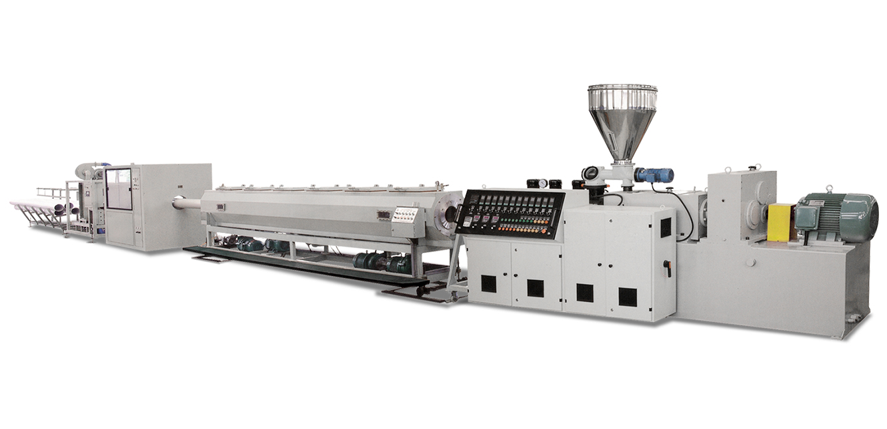
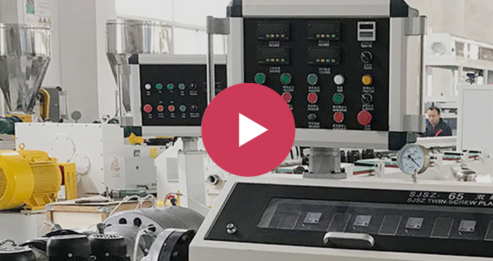

PVC Pipe
Extrusion Line.
Twin-screw extrusion. Coordinated downstream equipment. One line configured around the pipe you need to produce.
Discuss your PVC project View reference specifications
One line.
From compound to pipe.
Define the PVC formulation, pipe dimensions and output target first. Then coordinate the stages of the line around them.
- 01
Mix & extrude
Material preparation and a twin-screw extruder matched to the process requirements.
- 02
Form & calibrate
Die tooling, vacuum calibration and cooling selected around the pipe dimensions.
- 03
Haul & cut
Coordinated haul-off and cutting equipment for continuous pipe handling.
- 04
Finish & handle
Marking, belling and final handling specified for your finished product.
A reference configuration.
A starting point for yours.
These values describe the configuration on the source page, rather than every PVC line we can discuss.
| Main extruder | 80/156 or 80/173 seriesConfirm the exact model designation during selection. |
|---|---|
| Pipe diameters | 110, 140, 160, 200, 225, 250, 280, 315 mm |
| Die-head groups | 110–200 mm / 225–315 mm |
| Listed equipment | Belling machine, laser printer, high-speed mixer, crusher and mill |
| Total power | 190 kW or 215 kWSource-listed total power, not a measured energy-consumption figure. |
Reference: Huade Machinery PVC pipe extrusion line page. Checked on 20 October 2026. Confirm current specifications, equipment scope, capacity and utilities in your quotation.
Start with
the application.
Your finished pipe determines the configuration. Include its intended use and dimensional requirements in the inquiry.
Water systems
Specify the pipe dimensions, intended service and applicable requirements for the project.
Electrical conduit
Describe the conduit sizes, production target and any marking or socket requirements.
Drainage & sewer
Include the diameter range, wall construction and finishing requirements for your pipe.
Single or multi-strand?
The reference page describes a dual-strand 16–40 mm conduit project and a single-strand 50–160 mm water/drainage project. These are separate project examples, not the specifications of the configuration table above.
Define your diameter rangeSee the equipment
in context.
Original reference imagery and a linked machinery demonstration help start the technical discussion. Ask for footage of the configuration being proposed for your project.
Browse the video library
Let's specify
your PVC line.
Share your formulation, diameter range, wall thickness and target output. Add plant space, utilities and finishing requirements when available.
Prepare your project brief
This form downloads your requirements as a text file. Online delivery is not connected. Share the saved brief with your established sales contact; it is not sent automatically.
Your entries remain in this browser. No form data is uploaded.
Before we configure
your line.
Is the reference table the full diameter range?
No. It describes one source-listed configuration. Share your complete diameter range and application so that the machine and tooling scope can be confirmed for your project.
What does total power mean here?
The table reproduces the source's total power entries. It does not state actual running consumption, energy per kilogram or guaranteed output. Request a project-specific power and utilities schedule.
Can I request a particular control system or finishing setup?
Include your control integration, printing, socketing and handling preferences in the requirements field. Final compatibility and equipment scope need engineering confirmation.